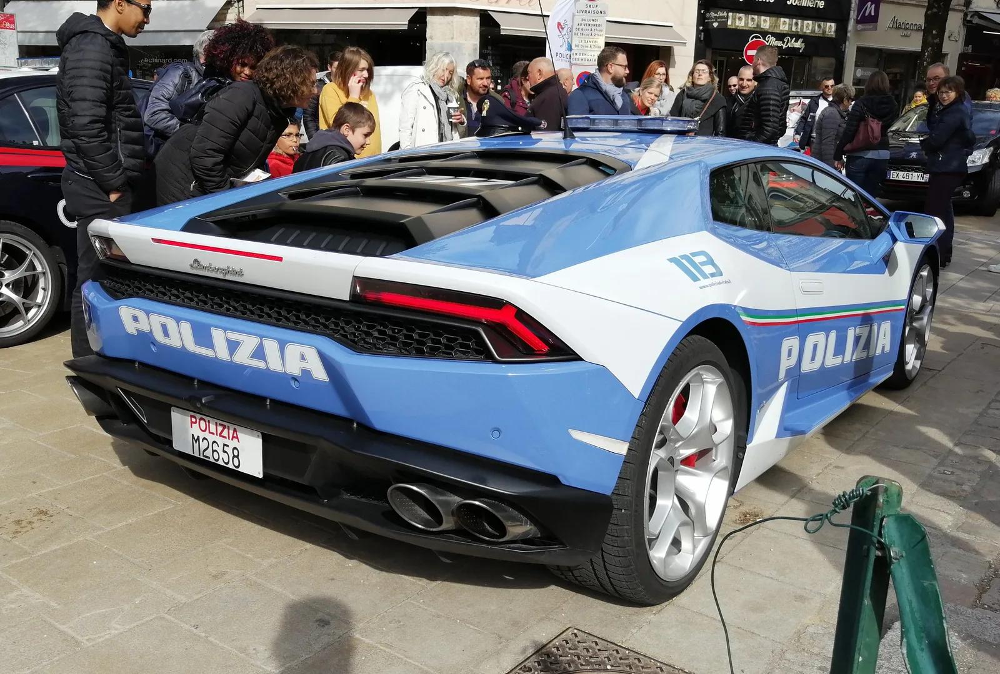
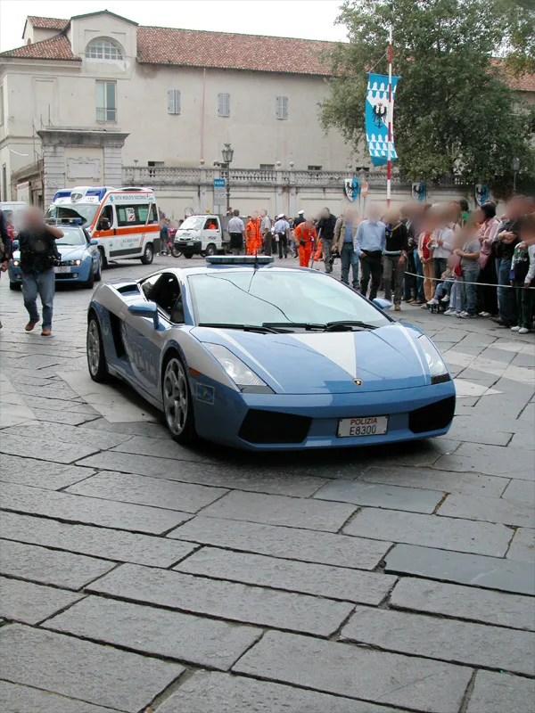

▲ 이탈리아 국가경찰의 람보르기니 우라칸 폴리치아. 새 테메라리오가 이 계보를 잇는다 ⓒ Wikimedia Commons (CC0)
람보르기니가 이탈리아 국가경찰에 신형 테메라리오 폴리치아를 인도했다. 파란색과 흰색 도장에 지붕 라이트바, 이탈리아 국기를 모티브로 한 삼색 그래픽을 두른 이 차의 주 임무는 흔히 생각하는 고속 추격이 아니다. 장기와 의료 물품의 긴급 수송이다.
1. 왜 슈퍼카가 필요한가

▲ 2004년 투입된 가야르도 폴리치아. 람보르기니와 이탈리아 경찰 협력의 출발점이다 ⓒ Witchblue, Wikimedia Commons (CC BY-SA 3.0)
장기 이식은 적출부터 이식까지 허용되는 시간이 정해져 있다. 이 시간을 넘기면 이식 자체가 불가능해진다. 이탈리아 경찰이 람보르기니를 운용하는 이유가 여기에 있다. 고속도로를 최대한 빠르게 주파해 장기를 옮기는 것이 실제 임무이고, 이를 위해 트렁크에는 냉장 보관 장비가 탑재된다.
람보르기니와 이탈리아 국가경찰의 협력은 2004년 가야르도에서 시작됐다. 이후 우라칸, 우루스 페르포르만테 등 22년간 6대가 투입됐고, 그 사이 200개 이상의 장기가 성공적으로 운송됐다. 1,500회가 넘는 도로안전 교육도 함께 진행됐다.
2. 907마력 플러그인 하이브리드

▲ 람보르기니 슈퍼카(참고 이미지). 경찰 사양은 양산차를 기반으로 특수 장비를 더한다 ⓒ CarPrism
신형 테메라리오는 트윈터보 4.0리터 V8에 전기모터 3개와 3.8kWh 배터리를 결합한 플러그인 하이브리드다. 합산 출력은 907마력(677kW), 최대토크는 730Nm에 이른다. 0-100km/h를 2.7초에 끊고 최고속도는 약 343km/h다.
| 항목 | 제원 |
|---|---|
| 엔진 | 4.0리터 트윈터보 V8 |
| 전기모터 | 3개 |
| 배터리 | 3.8kWh |
| 합산 출력 | 907마력(677kW) |
| 최대토크 | 730Nm |
| 0-100km/h | 2.7초 |
3. 상징과 실용 사이

▲ 람보르기니 우라칸(민수 사양). 경찰 사양은 여기에 냉장 장비와 통신 장비를 더한다 ⓒ CarPrism
이런 차량이 홍보 목적이라는 시각도 있다. 다만 22년간 축적된 200건 이상의 장기 운송 기록은 실제 운용 실적으로 남아 있다. 제조사 입장에서는 브랜드를 알리고, 경찰 입장에서는 다른 방법으로는 확보하기 어려운 이동 속도를 얻는 구조다.
4. 정리
체크포인트
- 테메라리오 폴리치아는 907마력 PHEV다.
- 주 임무는 추격이 아니라 장기·의료 물품 긴급 수송이며 냉장 장비를 싣는다.
- 2004년 가야르도 이후 22년간 6대, 장기 200개 이상을 옮겼다.